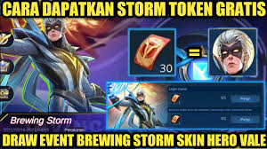

Tips Hemat Gacha Skin Vale di Event Starlight Festival Mobile
Legends 2024
Event Starlight Festival Mobile Legends 2024 resmi dirilis sejak 30 Desember 2024. Dalam event ini, Vale menjadi hero yang mendapatkan skin eksklusif dengan efek visual memukau dan detail yang luar biasa. Namun, mendapatkan skin ini membutuhkan ribuan diamond, sehingga banyak pemain mencari cara untuk menghemat pengeluaran saat gacha.
Selesaikan Misi Premium Supply
Seperti event-event eksklusif lainnya, menyelesaikan misi premium supply dapat memberikan token gacha gratis. Beberapa misi yang perlu diselesaikan antara lain login harian, top-up diamond, dan penggunaan diamond di dalam game. Total token gacha yang dapat diperoleh dari misi ini bisa mencapai lebih dari 30 token. Dengan token ini, kamu dapat mengurangi jumlah diamond yang perlu digunakan untuk gacha.
Manfaatkan Diskon Harian
Selain menyelesaikan misi premium supply, pemain juga dapat memanfaatkan diskon harian sebesar 20%. Diskon ini berlaku setiap hari dan dapat meningkat jika kamu adalah member Starlight bulanan. Dengan strategi mencicil gacha dan memanfaatkan diskon, kamu bisa mendapatkan skin Vale dengan harga yang jauh lebih murah, bahkan hingga setengah dari harga normal.
Berapa Diamond yang Dibutuhkan?
Menurut kanal YouTube VY Gaming, pemain perlu melakukan sekitar 80
kali gacha untuk mendapatkan skin eksklusif Vale. Dengan harga 10
kali gacha sebesar 200 diamond menggunakan diskon, dan tambahan
token gratis dari misi premium supply, total diamond yang dibutuhkan
diperkirakan sekitar 600 diamond. Angka ini jauh lebih hemat
dibandingkan harus membeli diamond secara langsung tanpa strategi.
Dengan mengikuti tips ini, kamu dapat memiliki skin eksklusif Vale
tanpa perlu mengeluarkan terlalu banyak diamond. Jangan lupa untuk
memanfaatkan semua peluang yang ada di event ini agar hasilnya lebih
maksimal.
Artikel ini berdasarkan laporan dari *Lamongan Terkini*. Dapatkan berita Mobile Legends terbaru dengan mengunduh aplikasi Pikiran Rakyat Mobile di Android atau iOS!